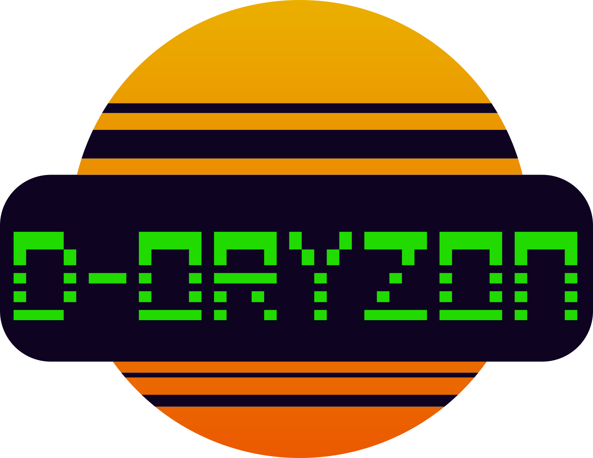

A D-Oryzon nasceu com o objetivo claro de impulsionar comércios, pequenas empresas e marcas locais através do uso estratégico, inteligente e acessível da tecnologia de ponta. Acreditamos fortemente que sistemas de automação, presença web de alto nível e infraestruturas digitais robustas não devem ser prerrogativas exclusivas de grandes corporações multinacionais.
Atuando de maneira independente na região do ABC, focamos em resolver dores logísticas e operacionais críticas que drenam o caixa de pequenos comerciantes. Seja protegendo estoques refrigerados contra quedas de energia com soluções inteligentes de hardware, construindo e-commerces seguros ou otimizando o alcance regional de marcas através de anúncios de alta performance, nosso propósito final é estruturar caminhos claros para a expansão independente de nossos parceiros comerciais.